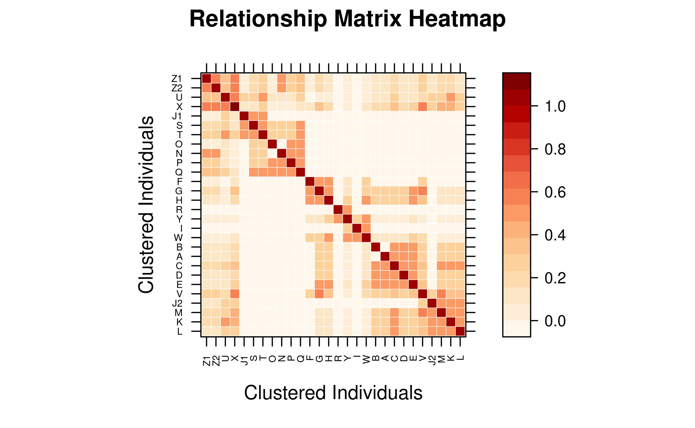
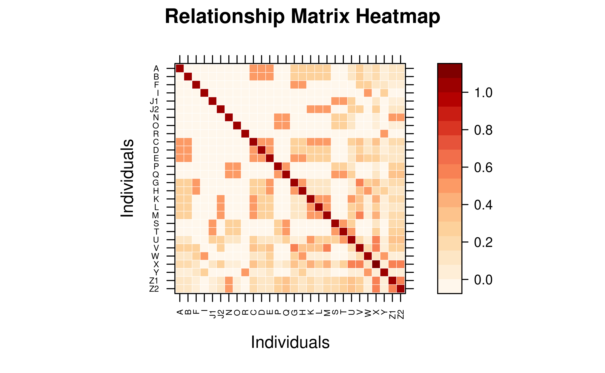
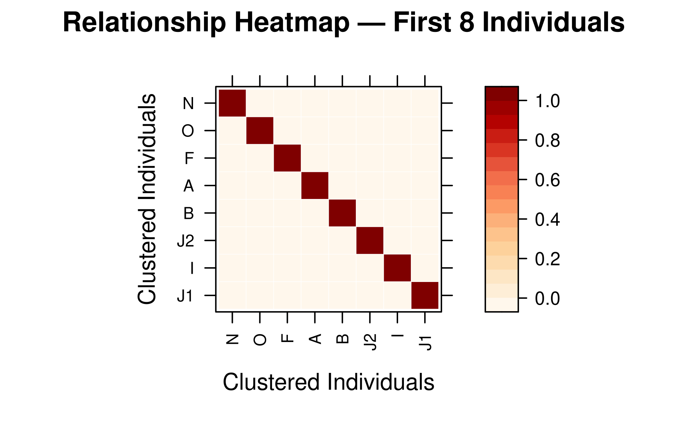
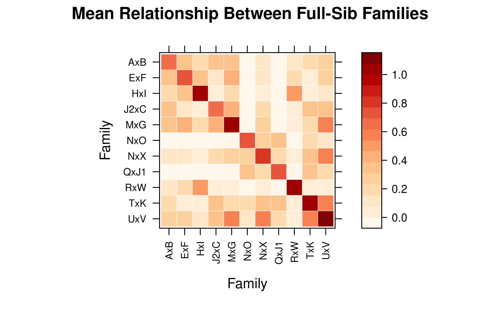
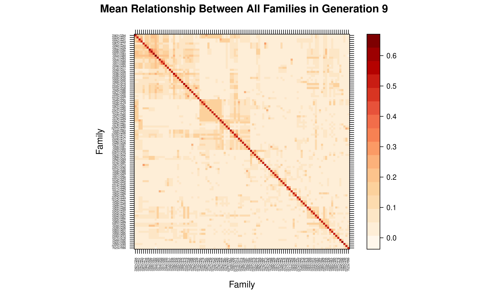

5. Calculation and visualization of relationship matrix
Sheng Luan
2026-04-02
Source:vignettes/relationship-matrix.Rmd
relationship-matrix.Rmd-
Calculating Relationship Matrices with
pedmat()
1.1 Supported Methods
1.2 Basic Usage
1.3 Sparse Matrix Representation
-
Inspecting the Matrix
2.1 Summary Statistics
2.2 Querying Specific Relationships
-
Compact Mode for Large Pedigrees
3.1 Using compact = TRUE
3.2 Expanding and Querying Compacted Matrices
3.3 When to Use Compact Mode
-
Visualizing Relationship Matrices with
vismat()
4.1 Relationship Heatmaps
4.2 Inbreeding and Kinship Histograms
- Performance Considerations
Relationship matrices are fundamental tools in quantitative genetics
and animal breeding. They quantify the genetic similarity between
individuals due to shared ancestry, which is essential for estimating
breeding values (BLUP) and managing genetic diversity. The
visPedigree package provides efficient tools for
calculating various relationship matrices and visualizing them through
heatmaps and histograms.
1. Calculating Relationship Matrices with pedmat()
The pedmat() function is the primary tool for
calculating relationship matrices. It supports both additive and
dominance relationship matrices, as well as their inverses.
1.1 Supported Methods
The method parameter in pedmat() determines
the type of matrix to calculate:
- “A”: Additive relationship matrix (Numerator Relationship Matrix).
- “Ainv”: Inverse of the additive relationship matrix.
- “D”: Dominance relationship matrix.
- “Dinv”: Inverse of the dominance relationship matrix.
- “AA”: Additive-by-additive (epistatic) relationship matrix.
- “AAinv”: Inverse of the epistatic relationship matrix.
-
“f”: Inbreeding coefficients vector (uses the same
optimized engine as
tidyped(..., inbreed = TRUE)).
1.2 Basic Usage
Most calculations require a pedigree tidied by
tidyped().
# Load example pedigree and tidy it
data(small_ped)
tped <- tidyped(small_ped)
# Calculate Additive Relationship Matrix (A)
mat_A <- pedmat(tped, method = "A")
# Calculate Dominance Relationship Matrix (D)
mat_D <- pedmat(tped, method = "D")
# Calculate inbreeding coefficients (f)
vec_f <- pedmat(tped, method = "f")1.3 Sparse Matrix Representation
By default, pedmat() returns a sparse matrix (class
dsCMatrix from the Matrix package) for
relationship matrices. This is highly memory-efficient for large
pedigrees where many individuals are unrelated.
class(mat_A)
#> [1] "dgeMatrix"
#> attr(,"package")
#> [1] "Matrix"2. Inspecting the Matrix
2.1 Summary Statistics
Use the summary() method to get an overview of the
calculated matrix, including size, density, and average
relationship.
2.2 Querying Specific Relationships
Instead of manually indexing the matrix, you can use
query_relationship() to retrieve coefficients by individual
IDs.
# Query relationship between Z1 and Z2
query_relationship(mat_A, "Z1", "Z2")
#> [1] 0.5507812
# Query multiple pairs
query_relationship(mat_A, c("Z1", "A"), c("Z2", "B"))
#> 2 x 2 Matrix of class "dgeMatrix"
#> Z2 B
#> Z1 0.5507812 0.09375
#> A 0.0937500 0.000003. Compact Mode for Large Pedigrees
For large pedigrees with many full-sibling families (common in
aquatic breeding populations), pedmat() can merge full
siblings into representative nodes to save memory and time.
3.1 Using compact = TRUE
When compact = TRUE, the matrix is calculated for unique
representative individuals from each full-sib family.
# Calculate compacted A matrix
mat_compact <- pedmat(tped, method = "A", compact = TRUE)
# The result is a 'pedmat' object containing the compacted matrix
print(mat_compact[11:20,11:20])
#> 10 x 10 Matrix of class "dgeMatrix"
#> D E P Q G H K L M S
#> D 1.00 0.50 0.00 0.0 0.250 0.250 0.250 0.250 0.250 0.00
#> E 0.50 1.00 0.00 0.0 0.500 0.500 0.250 0.250 0.250 0.00
#> P 0.00 0.00 1.00 0.5 0.000 0.000 0.000 0.000 0.000 0.25
#> Q 0.00 0.00 0.50 1.0 0.000 0.000 0.000 0.000 0.000 0.50
#> G 0.25 0.50 0.00 0.0 1.000 0.500 0.125 0.125 0.125 0.00
#> H 0.25 0.50 0.00 0.0 0.500 1.000 0.125 0.125 0.125 0.00
#> K 0.25 0.25 0.00 0.0 0.125 0.125 1.000 0.500 0.500 0.00
#> L 0.25 0.25 0.00 0.0 0.125 0.125 0.500 1.000 0.500 0.00
#> M 0.25 0.25 0.00 0.0 0.125 0.125 0.500 0.500 1.000 0.00
#> S 0.00 0.00 0.25 0.5 0.000 0.000 0.000 0.000 0.000 1.003.2 Expanding and Querying Compacted Matrices
If you need the full matrix after a compact calculation, use
expand_pedmat(). For retrieving specific values,
query_relationship() handles both standard and compact
objects transparently.
# Expand to full 28x28 matrix
mat_full <- expand_pedmat(mat_compact)
dim(mat_full)
#> [1] 28 28
# Query still works the same way
query_relationship(mat_compact, "Z1", "Z2")
#> [1] 0.55078123.3 When to Use Compact Mode
Compact mode is highly recommended for:
- Large Pedigrees: More than 5,000 individuals with substantial full-sibling groups.
- High-fecundity species: Such as aquatic animals or plants, where families often have hundreds or thousands of offspring.
- Memory-limited environments: When the full matrix exceeds available RAM.
| Pedigree Size | Full-Sib Proportion | Recommended Mode |
|---|---|---|
| < 1,000 | Any | Standard |
| > 5,000 | < 20% | Standard / Compact |
| > 5,000 | > 20% | Compact |
4. Visualizing Relationship Matrices with vismat()
Visualization helps in understanding population structure, detecting family clusters, and checking the distribution of genetic relationships.
4.1 Relationship Heatmaps
The "heatmap" type (default) uses a Nature Genetics
style color palette (White–Orange–Red) to display relationships. Rows
and columns are reordered by hierarchical clustering (Ward.D2) by
default, bringing closely related individuals into contiguous blocks —
full-sibs cluster tightly because they share nearly identical
relationship profiles with the rest of the population.
# Heatmap of the A matrix (with default clustering reorder)
vismat(mat_A, labelcex = 0.5)
Compact Matrix — Direct Visualization
A compact pedmat object can be passed directly to
vismat(). It is automatically expanded to full dimensions
before rendering.
# Compact matrix: expanded automatically (message printed)
vismat(mat_compact,labelcex=0.5)
#> Expanding compact matrix (27 -> 28 individuals) for visualization.
Preserve Pedigree Order
Set reorder = FALSE to keep the original pedigree order
instead of re-sorting by clustering.
vismat(mat_A, reorder = FALSE, labelcex = 0.5)
Display a Subset of Individuals
Use ids to focus on specific individuals.
target_ids <- rownames(as.matrix(mat_A))[1:8]
vismat(mat_A, ids = target_ids,
main = "Relationship Heatmap — First 8 Individuals")
Grouping by Pedigree Column
For large populations, aggregate relationships to a group-level view
using the by parameter. The matrix is reduced to mean
coefficients between groups.
# Mean relationship between generations
vismat(mat_A, ped = tped, by = "Gen",
main = "Mean Relationship Between Generations")
#> Aggregating 28 individuals into 6 groups based on 'Gen'...
# Mean relationship between full-sib families
# (founders without a family assignment are excluded automatically)
vismat(mat_A, ped = tped, by = "Family",
main = "Mean Relationship Between Full-Sib Families")
#> Note: Excluding 9 founder(s) with no family assignment: J1, O, N, F, R (and 4 more)
#> Aggregating 19 individuals into 11 groups based on 'Family'...
4.2 Inbreeding and Kinship Histograms
The “histogram” type displays the distribution of relationship coefficients (lower triangle) or inbreeding coefficients.
# Distribution of relationship coefficients
vismat(mat_A, type = "histogram")
5. Performance Considerations
Calculation and visualization of large matrices can be
resource-intensive. vismat() applies the following
automatic optimizations:
| Condition | Behavior |
|---|---|
Compact + by
|
Group means are computed directly from the compact matrix (no full expansion) |
Compact, no by, N > 5 000 |
Uses compact representative view (labels show
ID (×n)) |
Compact, no by, N ≤ 5 000 |
Matrix is automatically expanded via
expand_pedmat()
|
| N > 2 000 | Hierarchical clustering (reorder) is automatically skipped |
| N > 500 | Individual labels are automatically hidden |
| N > 100 | Grid lines are automatically hidden |
When a compact pedmat is used with by,
vismat() computes the group-level mean relationship matrix
algebraically from the K×K compact matrix, including a sibling
off-diagonal correction. This avoids expanding to the full N×N matrix,
making family-level or generation-level visualization feasible even for
pedigrees with hundreds of thousands of individuals.
The example below uses big_family_size_ped (178 431
individuals, compact to 2 626) and displays the mean additive
relationship among all full-sib families in the latest
generation — a computation that would be infeasible with full
expansion.
data(big_family_size_ped)
tp_big <- tidyped(big_family_size_ped)
last_gen <- max(tp_big$Gen, na.rm = TRUE)
# Compute the compact A matrix for the entire pedigree
mat_big_compact <- pedmat(tp_big, method = "A", compact = TRUE)
# Focus on all individuals in the last generation that belong to a family
ids_last_gen <- tp_big[Gen == last_gen & !is.na(Family), Ind]
# vismat() aggregates directly from the compact matrix — no expansion needed
vismat(
mat_big_compact,
ped = tp_big,
ids = ids_last_gen,
by = "Family",
labelcex = 0.3,
main = paste("Mean Relationship Between All Families in Generation", last_gen)
)
#> Aggregating 37009 individuals into 106 groups based on 'Family'...
This family-level view reveals the genetic structure among all 106 families comprising 37009 individuals, computed in seconds from the compact matrix.
See Also: -
vignette("tidy-pedigree", package = "visPedigree") -
vignette("draw-pedigree", package = "visPedigree")